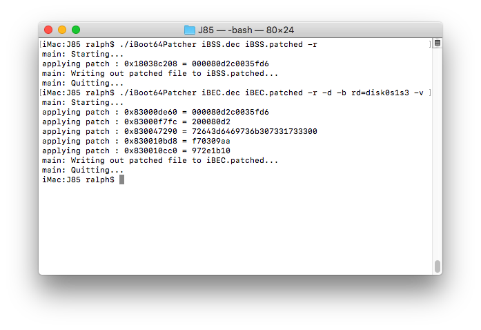

First boot
Decrypt iBSS and iBEC:img4 -i iBSS.* -o iBSS.dec iv_key
img4 -i iBEC.* -o iBEC.dec iv_key
And patch signature checks using iBoot64Patcher:iBoot64Patcher iBSS.dec iBSS.patched
If you are booting the custom ramdisk, patch signature checks and add -v arg to iBEC:iBoot64Patcher iBEC.dec iBEC.patched -b “rd=md0 -restore -v”
Otherwise, for booting the second iOS install, iBEC needs an arg which will point it towards the new partition. Add rd=disk0s1s3 (or your new system partition disk) and -v args to iBEC:iBoot64Patcher iBEC.dec iBEC.patched -b “rd=disk0s1s3 -v”
 Now pack them back into img4:
Now pack them back into img4:
img4 -i iBSS.patched -o iBSS.img4 -M IM4M -A -T ibss
img4 -i iBEC.patched -o iBEC.img4 -M IM4M -A -T ibec
For booting the second OS, Sign stock kernelcache ,applelogo and trustcache (on iOS 12+) using same apticket:img4 -i *.im4p -o *.img4 -M IM4M
Note: you can find trustcache name in BuildManifest.plist  Pack devicetree into img4 with rdtr (RestoreDevicetree) tag. The devicetree needs this tag, otherwise iBEC will refuse to see it as valid:img4 -i devicetree.raw -o devicetree.img4 -M IM4M -T rdtr
Done! It's finally time to put the iPhone into pwned dfu and boot using irecovery:Send iBSS, along with iBEC:
irecovery -f iBSS.img4
irecovery -f iBEC.img4
If you are booting the ramdisk, send it and use ramdisk command to load it:irecovery -f ramdisk
irecovery -c ramdisk
Load devicetree:irecovery -f devicetree.img4
irecovery -c devicetree
Send trustcache if needed:
irecovery -f trustcache.img4
irecovery -c firmware
Send kernelcache and bootx:irecovery -f kernelcache.img4
irecovery -c bootx
In the case of generating keybags:
If you see “AppleKeyStore: disabling use of effaceable storage, using fake key”, in verbose output, you can reboot to first system. Now mount disk0s1s3 and put keybagd in its original place:
Now mount disk0s1s3 and put keybagd in its original place:
mv /mnt1/usr/libexec/keybagd_bak /mnt1/usr/libexec/keybagd
We’re done. If you’ve done everything correctly the device should boot in the next boot.